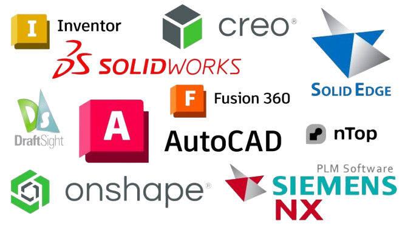

What is included
- Part modeling and technical drawing preparation.
- Revision work for existing parts and broken components.
- Geometry prepared for 3D printing or review.
- Clear communication around dimensions and constraints.
CAD work
CAD design supports precise planning, fast iteration, and better manufacturing results. Whether the part is for printing, repair, or a technical concept, the model should be readable, robust, and practical.

Design intent
The CAD workflow is intentionally simple: define the problem, create the geometry, verify the fit, then hand over files that are ready to use.